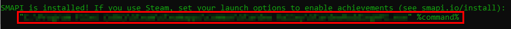
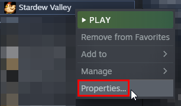
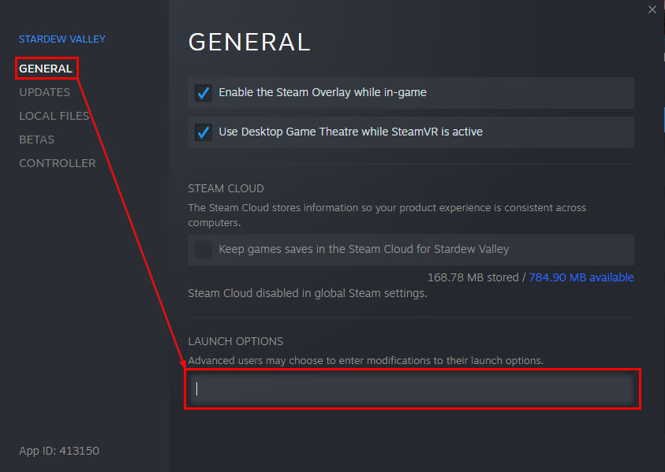

Modding:SMAPI auf Windows
Diese Seite erklärt, wie du SMAPI (das Werkzeug, welches dich Mods verwenden lässt) auf Linux installieren kannst. Siehe auch:
Installation
Option A: Nutze SMAPIs Installationsprogramm
- Siehe auch inoffizielle Videoanleitung (Englisch).
- Starte das Spiel mindestens einmal ohne SMAPI (damit es eine Ersteinrichtung durchführen kann).
- Lade die neueste Version von SMAPI herunter.
- Extrahiere die .zip Datei irgendwo (aber nicht im Spielordner!).
- Doppelklick install on Windows.bat¹ und folge den Bildschirmanweisungen.
- Siehe Starte SMAPI über Steam oder GOG Galaxy für die letzten Schritte.
¹ Informationen zur manuellen Installation können in den Anweisungen der Readme-Datei im Installationsprogramm gefunden werden.
Option B: Nutze ModDrop
ModDrop ist ein Mod-Manager, der SMAPI unterstützt. Es kann SMAPI installieren, auf dem neuesten Stand halten und die Installation und das Aktualisieren von Mods vereinfachen.
- Installiere ModDrop und öffne den Clienten.
- Klicke in der oberen rechten Ecke auf Install SMAPI oder Update Available.
- Es sollte sich ein Fenster öffnen, das etwas sagt wie "A new version of SMAPI is available." Klicke auf den Install-Knopf und folge den Bildschirmanweisungen.
Option C: Nutze Vortex
Vortex ist ein Mod-Manager von Nexus Mods. Es kann SMAPI installieren, auf dem neuesten Stand halten und die Installation und das Aktualisieren von Mods vereinfachen.
- Melde dich in deinem Nexus Mods-Account an.
- Installiere und starte Vortex.
- Klicke auf den Log In or Register-Knopf im oberen mittleren Teil des Vortex-Hauptfensters. Ein Web-Browser sollte sich öffnen, der fragt, ob man Vortex die Synchronisierung mit seinem Nexus Mods-Account erlauben möchte. Das aktiviert den Mod Manager Download-Knopf auf den Nexus Mod-Seiten. Akzeptiere die Autorisierung.
- Richte Stardew Valley in Vortex ein, indem du auf die linke Registerkarte "games" klickst, Stardew Valley suchst und es anklickst. Du kannst auch die Speicherorte der Download-Ordner auf der linken Registerkarte "Einstellungen" festlegen.
- Klicke auf die Benachrichtigungsglocke in der oberen rechten Ecke, die dich auffordert, SMAPI herunterzuladen und zu installieren.
- Nachdem SMAPI in Vortex installiert ist, klicke auf enable und schon bist du fertig!
- Siehe Starte SMAPI über Steam oder GOG Galaxy für die letzten Schritte.
Aktualisiere SMAPI
Option A: Nutze SMAPI's Installationsprogramm
Installiere einfach die neue Version, der Installer wird automatisch die Alte entfernen (Steam muss nicht neu eingestellt werden).
Option B: Nutze ModDrop
Wenn du den ModDrop Mod Manager benutzt:
- Klicke auf Update Available in der oberen rechten Ecke wenn es erscheint.
- Folge der Anleitung auf dem Bildschirm.
Option C: Nutze Vortex
Wenn du den Vortex Mod Manager benutzt:
- Gehe zu SMAPI's Mod Seite und lade es mit dem Mod Manager Download Knopf herunter.
- Klicke auf Open Vortex wenn das Popup erscheint.
- Klicke auf das Vortex Fenster und die Benachrichtigungsglocke wird erscheinen mit einer Benachrichtigung oben rechts. Klicke auf install und dann enable.
Deinstallieren
- Lasse das Installationsprogramm erneut laufen, aber wähle diesmal uninstall um SMAPI zu entfernen.
- Wenn du Steam oder GOG Galaxy konfiguriert hast um SMAPI zu starten, mache deine Änderungen rückgängig:
- Steam: im Steam Client rechtsklicke auf Stardew Valley, wähle Properties > General > Set Launch Options und leere das launch options Textfeld.
- GOG Galaxy: im GOG Galaxy client: Klicke auf Stardew Valley, klicke das Einstellungen Icon neben dem 'Play' Knopf und wähle Manage installation > Configure und entferne den Haken bei der Custom executables / arguments Checkbox.
(Wenn du temporär ohne Mods spielen möchtest, kannst du auch einfach die Stardew Valley.exe Datei direkt starten oder deinen Mods Ordner umbenennen.)
Starte SMAPI über Steam oder GOG Galaxy
Wenn du Steam oder GOG Galaxy benutzt und willst, dass sie deine Erfolge und Spielzeit tracken, kannst du sie einstellen SMAPI zu starten.
Wenn dir Erfolge und das Tracken der Spielzeit egal sind kannst du einfach die StardewModdingAPI.exe Datei in deinem Spiel Ordner ausführen um mit Mods zu spielen.
Steam
Du kannst SMAPI über den Steam Client starten um das Overlay und Erfolge zu aktivieren.
- Lasse SMAPIs Installationsprogramm offen.
(Wenn du es schon geschlossen hast, lasse es einfach nochmal laufen. Deinstallieren ist nicht nötig). - Kopiere den Text im Fenster des Installationsprogramms, der etwa so aussieht (Siehe wie man den Text kopiert):

Stelle sicher, dass du die gesamte Zeile kopierst, inklusive beider Anführungszeichen"und den%command%Teil.
Dein vollständiger Pfad sollte etwa so aussehen:"Your path here" %command% - Im Steam Client, rechtsklicke auf Stardew Valley und wähle Properties:
 - Klicke in das Textfeld unter Launch Options:
 - Ersetze alles im Feld mit dem Text den du aus dem Installationsprogramm herauskopiert hast.
Um Text einzufügen drücke die Tasten CTRL und V. - Klicke OK um deine Änderungen zu speichern.
- Ab jetzt starte das Spiel nurnoch mit Steam, um SMAPI mit dem Steam Overlay und Steam Erfolgen zu spielen.
GOG Galaxy
Du kannst Smapi durch den GOG Gaaxy Client benutzen um deine Spielzeit zu tacken. Die Schritte unten teilen GOG Galaxy mit, ein Batch Skript zu starten, welches dann wiederum die StardewModdingAPI.exe Anwendung öffnt. Dies geschieht, da wenn GOG Galaxy StardewModdingAPI.exe direkt startet, die SMAPI Konsole unsichtbar sein würde, was wichtige Fehlermeldungen und Warnungen verstecken könnte.
- Öffne Notepad und füge das folgende ein:
start "" "C:\Program Files (x86)\GOG Galaxy\Games\Stardew Valley\StardewModdingAPI.exe"Wenn Stardew Valley und SMAPI nicht inC:\Program Files (x86)\GOG Galaxy\Games\Stardew Valley\installiert sind (standard für die meisten Leute), ersetze es mit dem Pfad unter dem Stardew Valley installiert ist. - Gehe auf Datei und wähle Speichern Unter...

- Navigiere zu deinem Stardew Valley Installationsordner und ändere den Dateityp von Text Dokument zu Alle Dateien (wie unten gezeigt) und klicke auf Speichern.

- Tippe dann
start.batals Dateiname ein, wie unten gezeigt wird
- Im GOG Galaxy Client, klicke auf Stardew Valley und dann auf das Einstellungen Symbol rechts vom Spielen Knopf. Wähle nun Manage installation > Configure..., wie unten gezeigt wird.

- Ein neues Menu wird erscheinen. Setze einen Haken bei der "Custom executables / arguments" Box.

- Klicke auf 'Add another executable / arguments'

- Wähle start.bat in dem Fenster das erscheint aus und klicke Öffnen.

- Klicke schließlich den Kreis neben 'Default Executable' unter File 2 an und klicke OK.

- Ab jetzt kannst du Stardew Valley durch GOG Galaxy öffen und sowohl die SMAPI Konsole als auch das Spiel werden wie erwartet laden!
Fehlerbehebung
"Oops, couldn't find the game automatically"
Wenn das Installationsprogramm diese Nachricht anzeigt, kannst du ihm helfen den Spiel Ordner zu finden. Tue folgendes:
- Beende das Installationsprogramm.
- Finde deinen Spielordner.
- Verschiebe den Ordner des Installationsprogramms in den Spiel Ordner, nicht nur die Dateien darin!
- Lasse das Installationsprogramm erneut laufen und es sollte den Spiel Ordner von alleine erkennen.
Du kannst den Ordner des Installationsprograms problemlos löschen wenn es fertig ist.
Probleme mit SMAPI oder Mods
Sieh dir die Problembehebungsseite an um Hilfe mit Problemen nach der Installation zu erhalten.